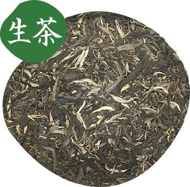

弊社における新型コロナウイルスへの対応について
平素より格別の引き立てを賜り、厚く御礼申し上げます。
弊社は、新型コロナウイルス感染拡大防止に向けた取り組みを進めております。
現時点では、弊社の従業員には、新型コロナウイルスの感染者は確認されておりませんが、
引き続きお客様に安心してご利用いただけるよう、以下の対応を行っておりますのでお知らせいたします。
記
1．マスクの配布と着用の義務化。アルコール除菌剤の設置・増設を行い、
事務所内の除菌清掃を強化しております。
2．従業員に手洗いうがい、アルコール消毒液での手指消毒を徹底させ、
出勤前の検温で37.5度以上の発熱、および異常が見られる場合には、出勤を禁じております。
3．試飲の際には、全スタッフがマスクを着用しております。
弊社では、お客様と社員の安全を最優先に考え、今後も感染拡大の抑止に努めてまいりますので、
ご理解賜りますよう宜しくお願い申し上げます。
プーアル茶の本場、中国雲南省で摂れる樹齢200年以上の茶葉は
‟飲める骨董品”
と呼ばれるほど価値が高く、また深い味わいがあります。
私たちは度々中国へ赴き、より良い茶葉を探しています。
この度、新しく仕入れた貴重なプーアル茶と、その文化をお届けしたく思います。
また、”お茶のある生活”を愉しんでいただくため、プレゼントをご用意いたしました。
私たちは、日本国内はもちろん、台湾、韓国へも赴き、より良いプーアル茶を探してきました。
そしてやはり、プーアル茶発祥の地である、雲南省南部に辿り着きました。
産地だけでなく、茶葉、熟成、そして安心にこだわりをもち、
高級茶葉の中でも、より厳選した茶葉のみを提供します。
プーアル茶には、加工方法により「熟茶」と「生茶」に分けられます。
【木の舟】では、一般的に出回っている熟茶ではなく、
希少価値の高い生茶と、生茶を10年以上熟成させた「老茶」のみを取り扱っています。
人工的に発酵を行い、短期間で完全発酵させたプーアル茶を「熟茶」といいます。
大量生産用に栽培された茶葉を用いて急速に発酵させるため、風味が失われてしまいますが、その代わり安価で手に入ります。ペットボトル飲料やティーバックなどに加工されることが多く、日本で流通されているプーアル茶のほとんどは熟茶です。

- ・大量生産用の茶葉を用いるため、安価で手に入る
- ・発酵による経年劣化がほとんどなく、長期保存に向いていない
- ・旨みや香りが平たんになる
プーアル茶本来の特徴を活かし、長い歳月をかけ自然発酵により熟成させたプーアル茶を「生茶」といいます。
品質が劣る茶葉は長期間熟成することが難しいため、品質の良い茶葉を厳選して使用します。立体的でまろやかな旨みがあり、陳香と呼ばれる独特の香りも愉しめます。”飲める骨董品”と呼ばれるように、熟成年数によっては資産価値も生まれます。
【木の舟】では、自信をもってお勧めできる 「生茶」を仕入れています。

- ・プーアル茶の伝統的な製法で、長い歳月をかけ自然発酵している
- ・良質な茶葉が使用されるため、入手が難しく、高価
- ・経年発酵での味わいの変化を楽しむことができる

10年以上の長期間、丁寧に熟成させた生茶を「老茶」といいます。
プーアル茶は、ワインのように長い年月をかけて、熟成の変化を愉しむことができます。10年以上も熟成されたものは大変貴重で、市場に流通することも少なく、非常に高価で取引されています。もちろん、味わいも格別に深く、感動的とさえいえる体験を与えてくれます。
まがい物もおおく出回っていますが、【木の舟】は品質が保証できる「老茶」を現地から仕入れています。

- ・希少性が高く数も限られているため、入手が難しい
- ・味わいは”感動的”と表現されるほど深く、他でにはない体験を与える
- ・その希少性から、資産価値が高いため投資目的で保有されることもある

【木の舟】は、プーアル茶の茶葉や茶器を専門に取り扱っていますが、基本的にネット通販は行っておりません。
その代わり、茶葉をもってお客様のもと訪問しております。
そして実際に飲んでいただき、気に入っていただけた茶葉だけを販売しております。
それには、「本物のプーアル茶、本物の文化を届ける」ための、大切な理由があります。

私たちは、あなたとプーアル茶との出会いを何よりもよいものに
したいと考えています。
プーアル茶は、樹齢や熟成期間、産地などにより、100g数千円から、希少なものでは数十万円のものまで様々です。しかし、大切なことは価格ではなく、あなたが感じる"価値”です。ネット通販では、産地や熟成期間といった茶葉のプロフィールをお見せしても、味や香り、色など、より大切なことをお伝えできません。
味、香り、色のすべてを体感していただきます
私たちは必ず「試飲」を通じて茶葉を販売しております。一人ひとりにあった茶葉を厳選してお持ちし、その場で淹れたお茶を飲んでいただき、味、香り、色のすべてを体感していただきます。複数の茶葉をテイスティングしていただき、気になること、疑問に思うことはその場でティーコンサルタントがお答えします。
お客様が、自身の感覚で一番素晴らしいと感じるお茶を選んでいただけるよう、プーアル茶との出会いをサポートします。

プーアル茶は古来中国より薬草として珍重されてきました。以来、
家族とテーブルを囲む時、友人との団欒の時、大切な人をもてなす時、生活の様々な場面で人と人とを繋ぎ、優雅でリラックスした時間を演出してきました。
味や香りだけではなく、そうした文化、伝統もプーアル茶の価値、愉しみの一つと考えております。
お茶を‟愉しむ”体験をお届けいたします
私たちは、優れた茶葉を探すため繰り返し中国へ訪問してきました。
その中で、プーアル茶を愉しむ文化や、受け継がれてきた伝統に触れてきました。
茶葉を試飲していく際には、その茶葉のもっとも美味しい淹れ方や、
その茶葉にまつわる様々な文化、伝統をご紹介いたします。

これまで、多くのお客様へ”本物のプーアル茶”をお届けしてきました。
”美味しいお茶を飲みたい” ”大切なお客様をもてなしたい” ”美容・健康のため”
プーアル茶を購入する目的は、お客様によって様々です。
しかし、試飲を通じてティーコンサルタントが最適なお茶をお勧めするため、
多くの方に満足していただいております。
孫の代まで引き継ぎたい
いつまでも保存ができ、なおかつ価値も上がるお茶というところにまず驚きました。
良い状態で保存した餅茶を、
孫の代まで引き継ぎたいと思います。
豊中市 80代夫婦 愛飲歴2年
感動の奥深さ
古樹茶の存在はしっていたが、希少な為に飲んだことはありませんでした。
煎も効き、奥深い味で感動しています。
三人の子供達も、美味しいと飲んでくれています。
芦屋市 50代女性 愛飲歴4ヵ月
味の変化を楽しみながら
飲んでいる
熟成させながら飲むことを前提に購入しました。
少しずつ、味の変化を楽しみながら飲んでいます。
川西市 70代男性 愛飲歴1年3ヵ月
比べものにならないくらい
美味しい
プーアル茶は、台湾旅行の際に購入して飲んだことがあるが、今回のプーアル茶はそれとは比べものにならないほど美味しい。
家族全員、自宅での水分補給はほぼプーアル茶で摂っている。
泉南郡 60代女性 愛飲歴7ヵ月
茶器の可愛さも評判
お茶も美味しく、自分にしては珍しく飲むことが習慣付いている。
来客でもお茶を振る舞うが、小さなガラスの茶器が可愛いと評判である。
泉南市 70代男性 愛飲歴2年
夫婦揃ってのライフワーク
生茶を頂くことは、夫婦揃ってのライフワークになっている。
茶殻は捨てずに全て保存しており、
飲む以外の活用を考えるのが現在の楽しみである。
城陽市 70代夫婦 愛飲歴9ヵ月